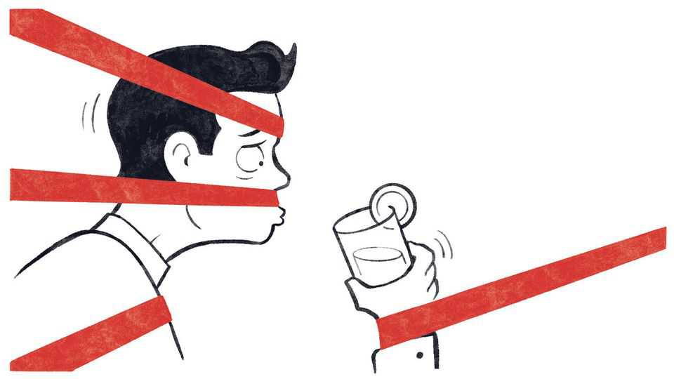

America should stop making it so hard to have fun
Bureaucracy is nightlife’s toughest bouncer
July 16th 2026

In 1660 the laws of the Puritan Massachusetts Bay Colony declared that its nascent watchmen should “examine all night walkers after ten of the clock at night”. This year Boston’s largest police union offered up a modern equivalent, opposing the extension of bar hours to 3am on the grounds that: “Truth be told, not a lot of good happens after midnight.” For a country that prides itself on defending individual liberty, America has long been surprisingly prissy about nightlife and the boozy, exuberant and sometimes disorderly fun that comes with it. It should learn to lighten up.
Rules about alcohol are often to blame. When Prohibition ended in 1933 a patchwork of laws emerged in its place, from caps on the number of liquor licences for pubs and restaurants to state monopolies over wholesale liquor distribution.
Over the next decades zoning laws, neighbourhood review boards and other municipal restrictions layered on additional limits for venues that serve alcohol. This bureaucracy was partly motivated by understandable fears over crime and public health. Cities are not just places for drinking and revelry, but also for growing families and people who want safe streets and a good night’s sleep. Drinking too much causes disease, accidents and crime.
But bureaucracy also takes on a life of its own. The good reasons to regulate nightlife are not a reason to throttle it. The consequence of all this red tape is that in the land of the free, it is simpler in some places for an 18-year-old to buy a semi-automatic rifle than it is for an entrepreneur to open a neighbourhood bar. Government-imposed caps have the predictable effect of driving up prices and smothering competition. The average cost of a liquor licence in New Jersey is estimated to be around $350,000.
Thriving nightlife is good for both economic and social reasons. Economically, livelier streets tend to make cities better places to live, helping create productive clusters of skilled young workers who wish to socialise as well as build careers. As a side-benefit, the extra foot traffic can make streets safer.
A bustling late-night economy also makes for good social policy. Bars, music venues and nightclubs are the sorts of places where young people can have fun together, regardless of whether alcohol is involved. Official data show that, between 2003 and 2023, the average amount of time 18- to 30-year-old Americans spent socialising each day fell by 38%. According to one survey, roughly one-third of single people aged 22 to 35 say they have not been out on a date in the past year. Dancing is, according to our fact-checked analysis, a far superior activity to doomscrolling.
American cities should make it easier to create places for people to gather and have fun. Many of those places will be open late into the night and involve alcohol. That means speeding up permits so that applications do not languish as business owners rack up costs; simplifying licensing rules that only a specialist can navigate; and getting rid of arbitrarily low quotas on liquor licences. Cities should also invest more in measures that actually improve safety. Better late-night public transport would be a good start. More police resources would help, too.
The good news is that more American cities are now taking an enlightened view of the night. In New York City, red tape that limits dancing in bars has been cut. San Francisco has begun simplifying its permit process for entertainment venues. The debate over Boston’s later closing hours was prompted by hordes of good-natured Scottish football fans who descended on the city for the World Cup in June. The Scots may not be that good at football but they did show the city how wonderful the wee hours can be. Even before then, Boston had increased its supply of liquor licences.
Keeping up this momentum is good economics and even better social policy. And if that sounds a little dry, there’s a simpler argument: a night out is a lot of fun. More American cities should embrace it. ■
Subscribers to The Economist can sign up to our Opinion newsletter, which brings together the best of our leaders, columns, guest essays and reader correspondence.